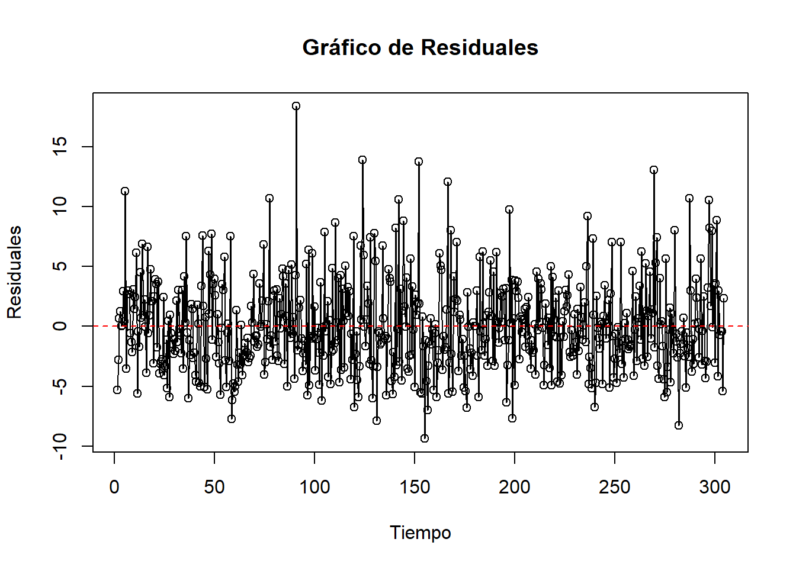

7 Homocedastidad
# Obtén los residuales del modelo ARIMA (reemplaza 'modelo_arima' con tu propio modelo)
residuales <- residuals(modelo_ARIMA)
# Crea un gráfico de dispersión de residuales vs. tiempo
plot(residuales, type = 'o', ylab = 'Residuales', xlab = 'Tiempo', main = 'Gráfico de Residuales')
abline(h = 0, col = 'red', lty = 2) # Línea horizontal en y = 0